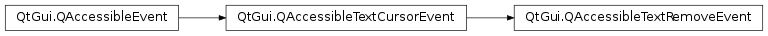

QAccessibleTextRemoveEvent¶
Synopsis¶
Functions¶
- def
changePosition() - def
textRemoved()
Detailed Description¶
The
PySide2.QtGui.QAccessibleTextRemoveEventclass notifies of text being deleted.This class is used with
QAccessible.updateAccessibility().
-
class
PySide2.QtGui.QAccessibleTextRemoveEvent(iface, position, text)¶ -
class
PySide2.QtGui.QAccessibleTextRemoveEvent(obj, position, text) Parameters: - iface –
PySide2.QtGui.QAccessibleInterface - position –
PySide2.QtCore.int - obj –
PySide2.QtCore.QObject - text – unicode
Constructs a new
PySide2.QtGui.QAccessibleTextRemoveEventevent foriface. Thetexthas been removed atposition. By default it is assumed that the cursor has moved toposition. If that is not the case, one needs to manually set it withQAccessibleTextCursorEvent.setCursorPosition()for this event.Constructs a new
PySide2.QtGui.QAccessibleTextRemoveEventevent forobject. Thetexthas been removed atposition. By default it is assumed that the cursor has moved toposition. If that is not the case, one needs to manually set it withQAccessibleTextCursorEvent.setCursorPosition()for this event.- iface –
-
PySide2.QtGui.QAccessibleTextRemoveEvent.changePosition()¶ Return type: PySide2.QtCore.intReturns the position where the text was removed.
-
PySide2.QtGui.QAccessibleTextRemoveEvent.textRemoved()¶ Return type: unicode Returns the text that has been removed.
© 2018 The Qt Company Ltd. Documentation contributions included herein are the copyrights of their respective owners. The documentation provided herein is licensed under the terms of the GNU Free Documentation License version 1.3 as published by the Free Software Foundation. Qt and respective logos are trademarks of The Qt Company Ltd. in Finland and/or other countries worldwide. All other trademarks are property of their respective owners.